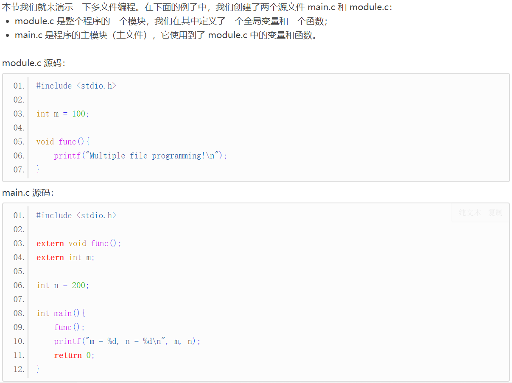
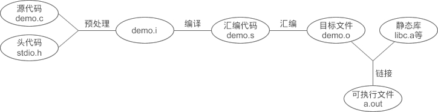

【本文结构】
- 1、从 extern 关键字开始谈C语言多文件编程
- 2、那些被编译器隐藏了的过程
- 预处理
- 编译
- 汇编
- 链接
- 3、目标文件和可执行文件里面都有什么？
- PC平台上流行的可执行文件的主要格式
- 目标文件的组织形式
- 可执行文件的组织形式
- 段（section）的合并
- 4、什么是链接，它起了什么作用？
- 5、符号 —— 链接的粘合剂
- 强符号和弱符号
- 强引用和弱引用
- 6、模块化编程的头文件
- C语言头文件的编写规范
- C语言标准库以及标准头文件
- C语言头文件的引用路径
- 防止C语言头文件被重复包含
- 7、static变量和函数
- 多文件编程： 多文件编程就是把多个头文件（ .h文件）和源文件（ .c文件）组合在一起构成一个程序，这是C语言的重点，也是C语言的难点。

- m 和 n 是在所有函数之外定义的全局变量（Global Variable），它的作用域默认是整个程序（但是在其它代码文件中使用，就得通过 extern 来声明），也就是所有的代码文件，包括 .c 和 .h 文件。
- 如果你一直在编写单个源文件的程序，那么请注意，全局变量的作用范围不是从变量定义处到该文件结束，在其他文件中也有效。
- （另一个更加规范的通过头文件进行多文件编程的示例请见本章第6小节“C语言头文件的编写规范”）
- 这里需要重点理解的是 extern 关键字，它用来声明一个变量或函数。
- extern 关键字： 它用来声明一个变量或函数。
- C语言代码是由上到下依次执行的，不管是变量还是函数，原则上都要先定义再使用，否则就会报错。但在实际开发中，经常会在函数或变量定义之前就使用它们，这个时候就需要提前声明。
- 声明（Declaration）： 就是告诉编译器我要使用这个变量或函数，你现在没有找到它的定义不要紧，请不要报错，稍后我会把定义补上。
- extern 是“外部”的意思，很多教材讲到，extern 用来声明一个外部（其他文件中）的变量或函数，也就是说，变量或函数的定义在其他文件中。不过我（系C语言中文网站长）认为这样讲不妥，因为除了定义在外部，定义在当前文件中也是正确的。
- 例如，将 module.c 中的int m = 100;移动到 main.c 中的任意位置都是可以的。
- 所以我认为，extern 是用来声明的，不管具体的定义是在当前文件内部还是外部，都是正确的。
- 函数的声明：
- 函数的定义有函数体，函数的声明没有函数体，编译器很容易区分定义和声明，
- 所以对于函数声明来说，有没有 extern 都是一样的。

- 变量的声明：
- 变量和函数不同，编译器只能根据 extern 来区分，有 extern 才是声明，没有 extern 就是定义。
- 变量的定义有两种形式，你可以在定义的同时初始化，也可以不初始化：
datatype name = value;
datatype name;
- 变量的声明只有一种形式，就是使用 extern 关键字：
extern datatype name;
- 变量也可以在声明的同时初始化，格式为：
extern datatype name = value; //这种似是而非的方式是不被推荐的，有的编译器也会给出警告，建议各位读者把定义和声明分开，尽量不要这样写。
- 如果在 Linux 下使用 GCC 来编译，使用最简单的$gcc demo.c命令，就可以在当前目录下看到 a.out。 下图是 GCC 生成 a.out 的过程：

- 预处理（Preprocessing）/预编译 （预处理文件/C语言代码源文件：.i 文件）
- 预处理过程主要是处理那些源文件和头文件中以#开头的命令，比如 #include、#define、#ifdef 等。预处理的规则一般如下：
- 将所有的#define删除，并展开所有的宏定义。
- 处理所有条件编译命令，比如 #if、#ifdef、#elif、#else、#endif 等。
- 处理#include命令，将被包含文件的内容插入到该命令所在的位置，这与复制粘贴的效果一样。注意，这个过程是递归进行的，也就是说被包含的文件可能还会包含其他的文件。
- 删除所有的注释//和/* ... */。
- 添加行号和文件名标识，便于在调试和出错时给出具体的代码位置。
- 保留所有的#pragma命令，因为编译器需要使用它们。
- 预处理的结果是生成.i文件。
- .i文件也是包含C语言代码的源文件，只不过所有的宏已经被展开，所有包含的文件已经被插入到当前文件中。
- 当你无法判断宏定义是否正确，或者文件包含是否有效时，可以查看.i文件来确定问题。
- 在 GCC 中，可以通过下面的命令生成.i文件：
$gcc -E demo.c -o demo.i //-E表示只进行预编译。
- 在 Visual Studio 中，在当前工程的属性面板中将“预处理到文件”设置为“是”。
- 编译（Compilation）（汇编代码文件：.s 文件 / .asm 文件）
- 编译就是把预处理完的文件进行一些列的词法分析、语法分析、语义分析以及优化后生成相应的汇编代码文件。
- 在 GCC 中，可以使用下面的命令生成.s文件：
$gcc -S demo.i -o demo.s //从 .i 文件进行编译
//或者
$gcc -S demo.c -o demo.s // 从 .c 文件进行编译
- 在 Visual Studio 中，不用进行任何设置就可以在工程目录下看到 demo.asm 文件。
- 汇编（Assembly）（目标文件/二进制文件：.o 文件 / .obj 文件）
- 汇编的过程就是将汇编代码转换成可以执行的机器指令。
- 汇编过程相对于编译来说比较简单，没有复杂的语法，也没有语义，也不需要做指令优化，只是根据汇编语句和机器指令的对照表一一翻译就可以了。
- 汇编的结果是产生目标文件，在 GCC 下的后缀为.o，在 Visual Studio 下的后缀为.obj。
- 目标文件已经是二进制文件。
- 通常将编译和汇编合称为编译。
- 需要明确的是：编译是针对单个源文件的，有几个源文件就会生成几个目标文件，并且在生成过程中不受其他源文件的影响。也就是说，不管当前工程中有多少个源文件，编译器每次只编译一个源文件、生成一个目标文件。
- 链接（Linking）（可执行文件/二进制文件）
- 目标文件已经是二进制文件，与可执行文件的组织形式类似，只是有些函数和全局变量的地址还未找到，程序不能执行。链接的作用就是找到这些目标地址，将所有的目标文件组织成一个可以执行的二进制文件。
- 目标文件的结构、可执行文件的结构、链接的过程是我们要重点研究的，它能够让我们明白多文件编程以及模块化开发的原理，这是大型项目开发的基石。
- PC平台上流行的可执行文件格式主要是：
- Windows 下的 PE（Portable Executable）；
- Linux 下的 ELF（Executable Linkable Format），
- 它们都是 COFF（Common File Format）格式的变种。
- COFF 是 Unix V3首先提出的规范，微软在此基础上制定了 PE 格式标准，并将它用于 Windows。
- 后来 Unix V4 又在 COFF 的基础上引入了 ELF 格式，被 Linux 广泛使用。
- 这也就是为什么 Windows 和 Linux 上的可执行文件如此相似的主要原因，因为它们都是源于同一种可执行文件格式 COFF。
- 从广义上讲，目标文件与可执行文件的存储格式几乎是一样的，我们可以将它们看成是同一种类型的文件，
- 在 Windows 下，将它们统称为 PE 文件，
- 在 Linux 下，将它们统称为 ELF文件。
- 动态链接库和静态链接库也是按照可执行文件的格式存储的。
- 动态链接库（DLL，Dynamic Linking Library）—— 可执行文件？
- Windows 下的.dll
- Linux 下的.so
- 静态链接库（Static Linking Library）—— 目标文件？
- Windows 下的.lib
- Linux 下的.a
- 静态链接库稍有不同，它是把多个目标文件捆绑在一起形成一个文件，再加上一些索引，你可以简单地把它理解为一个包含了很多目标文件的包。
- 他不太常见的可执行文件格式还有：
- Intel/Microsoft 的 OMF（Object Module Format）
- Unix a.out
- MS-DOS .COM 等。
- 在 Linux 的 ELF 标准中，主要包含以下四类文件：
文件类型 | 说明 | 例子 |
可重定位文件（Relocatable File） | 这类文件包含了代码和数据，可以被用来链接成为可执行文件或动态链接库。 静态链接库其实也是可重定位文件。 | Linux 下： 目标文件： .o ， 静态链接库： .a， Windows： 目标文件： .obj， 静态链接库： .lib。 |
可执行文件（Executable File） | 这类文件包含了可以直接执行的程序。 | Linux 下的可执行文件没有固定的后缀，一般不写。 Windows 下的 .exe。 |
共享目标文件（Shared Object File） | 这种文件包含了代码和数据，可以在以下两种情况下使用： 第一种是链接器可以使用这种文件跟其他的可重定位文件和共享目标文件链接，产生新的目标文件； 第二种是动态连接器可以将几个共享目标文件与可执行文件结合，作为进程的一部分来运行。 | Linux 下的动态链接库 .so。 Windows 下的动态链接库 .dll。 |
核心转储文件（Core Dump File） | 当进程意外终止时，系统可以将该进程的地址空间的内容以及其他信息保存到核心转储文件。 | Linux 下的 core dump。 |
- 编译生成的目标文件被划分成了多个部分，每个部分叫做一个段（Section） 。
- 段名大都以.作为前缀，表示这些名字是系统保留的。
- 除了这些系统保留的段名，应用程序也可以使用其它名字定义自己的段，比如可以在 ELF 文件中插入一个叫做music的段来保存 MP3 音乐。应用程序自定义的的段不建议使用.作为前缀，否则容易和系统保留段发生冲突。
- 在目标文件中，段表（Section Table）用来描述各个 Section 的信息，包括它的名字、长度、在文件中的偏移、读写权限等，通过段表可以详细地了解目标文件的结构。
- 可执行文件的组织形式和目标文件非常类似，也被划分成多个部分：
- 从文件结构的角度，可执行文件包含了众多的段（Section），每个段都有不同的作用；
- 从加载和执行的角度，所有的段都是数据，操作系统只关心数据的权限，只要把相同权限的数据加载到同一个内存区域，程序就能正确执行。
- 常见的数据权限无外乎三种：
- 只读（例如 .rodata 只读数据段）、
- 读写（例如 .data 数据段）、
- 读取和执行（例如 .text 代码段），
- 我们将一块连续的、具有相同权限的数据称为一个 Segment，一个 Segment 由多个权限相同的 Section 构成。
- 在可执行文件中，段表（Section Table）被删除了，取代它的是程序头表（Program Header Table）；
- 程序头表用来描述各个 Segment 的信息，包括它的类型、偏移、在进程虚拟地址空间中的起始地址、物理装载地址、长度、权限等。
- 操作系统就是根据程序头表将可执行文件加载到内存，并为各个 Segment 分配内存空间、确定起止地址。
- 也就是说，可执行文件不再关注具体的文件结构，而是关注程序的加载和执行过程。
- 映像文件（Image）： 可执行文件在加载时实际上是被映射的虚拟地址空间，所以可执行文件很多时候又被叫做映像文件。
- 编译器生成的是目标文件，而我们最终需要的是可执行文件，链接（Linking）的作用就是将多个目标文件合并成一个可执行文件。
- 在链接过程中，链接器会将多个目标文件中的代码段、数据段、调试信息等合并成可执行文件中的一个个段。
- 除了合并有用的段（例如代码段、数据段等），链接器还会删除多余的段（例如重定位段、段表等），增加其他段（例如程序头表等）。
- 几十年以前，计算机刚刚诞生，人们编写程序时，将所有的代码都写在同一个源文件中，经过长期的积累，程序包含了数百万行的代码，以至于人们无法维护这个程序了。
- 于是人们开始寻找新的方法，迫切地希望将程序源代码分散到多个文件中，一个文件一个模块，以便更好地阅读和维护，这个时候，链接器就粉墨登场了。
- 一切都是地址
- 数据是保存在内存中的，对于计算机硬件来说，必须知道它的地址才能使用。变量名、函数名等仅仅是地址的一种助记符，目的是在编程时更加方便地使用数据，当源文件被编译成可执行文件后，这些标识符都不存在了，它们被替换成了数据的地址。
- 编译器和链接器的一项重要任务就是将助记符替换成地址。
- 汇编语言的诞生（重定位惹的祸而催生）
- 机器语言： 计算机刚刚诞生的时候没有编程语言，人们直接使用机器语言（只有 0 和 1 两个二进制数字）编程。
- 跳转： 就是在执行当前代码块时转而执行其他的代码块。本质上，C语言中的函数就是一个代码块，当发生函数调用时，就会执行其它的代码块，这个过程就是通过跳转指令来完成的。
- 程序并不是一写好就永远不变化的，它可能会经常被修改。 基本上每次程序修改时，跳转指令的跳转地址都要重新计算。
- 重定位（relocation）： 在这个过程中，程序员需要人工重新计算每个子程序或者跳转的目标地址，这种重新计算各个目标地址的过程叫做重定位。这个过程十分繁琐又耗时，并且很容易出错。
- 如果程序包含了多个源文件，就很可能会有跨文件的跳转，这种人工重定位的方式在程序拥有多个模块时会导致更加严重的问题。
- 汇编语言（Assembly）：没办法，这种黑暗的程序员生活是没办法容忍的，于是先驱们发明了汇编语言，这相比机器语言来说是个很大的进步。
- 汇编语言使用接近人类的各种符号和标记来帮助记忆，比如用jmp表示跳转指令，用func表示一个子程序（C语言中的函数就是一个子程序）的起始地址，这种符号的方法使得人们从具体的机器指令和二进制地址中解放出来。 用一句政治口号来说就是“极大地解放了生产力”。
- 符号（Symbol）这个概念随着汇编语言的普及被广泛接受，它用来表示一个地址，这个地址可能是一段子程序（后来发展为函数）的起始地址，也可以是一个变量的地址。
- 符号是地址的助记符，它包括：
- 函数名
- 变量名
- C语言的诞生（模块化开发的需要催生）
- 后来随着软件规模的日渐庞大，代码量开始疯长，汇编语言的缺点逐渐暴露出来。汇编虽然提供了多种符号，但它依然非常接近计算机硬件，程序员要考虑很多细节问题和边界问题，并且不利于模块化开发，所以后来人们发明了C语言。
- C语言是比汇编更加高级的编程语言，极大地提高了开发效率，以加法为例，C语言只需要一条语句，汇编却需要四五条。
- 模块化开发：
- 在C语言中，一个模块可以认为是一个源文件（.c 文件）。
- 在C语言中，模块之间的依赖关系主要有两种：
- 模块间的函数调用，
- 模块间的变量访问。
- 模块间的符号引用：函数调用需要知道函数的首地址，变量访问需要知道变量的地址，所以这两种方式可以归结为一种，那就是模块间的符号引用。
- 链接： 这种通过符号将多个模块拼接为一个独立的程序的过程就叫做链接。—— 链接的作用
- 符号决议（Symbol Resolution）/ 重定位（Relocation）
- 链接的主要内容就是把各个模块之间的相互引用部分处理好，使得各个模块能够正确地衔接。链接器所做的主要工作跟前面提到的“人工调整地址”本质上没有什么两样，只不过现代的高级语言拥有诸多的特性，使得编译器和链接器更为复杂，功能更为强大，但从原理上来讲，无非是找到符号的地址，或者把指令中使用到的地址加以修正。这个过程称为符号决议 或者重定位。
- 当要进行链接时，链接器首先扫描所有的目标文件，获得各个段的长度、属性、位置等信息，并将目标文件中的所有（符号表中的）符号收集起来，统一放到一个全局符号表。
- 在这一步中，链接器会将目标文件中的各个段合并到可执行文件，并计算出合并后的各个段的长度、位置、虚拟地址等。
- 在目标文件的符号表中，保存了各个符号在段内的偏移，生成可执行文件后，原来各个段（Section）起始位置的虚拟地址就确定了下来，这样，使用起始地址加上偏移量就能够得到符号的地址（在进程中的虚拟地址）。
- 这种计算符号地址的过程被称为符号决议。
- 重定位表.rel.text和.rel.data中保存了需要重定位的全局符号以及重定位入口，完成了符号决议，链接器会根据重定位表调整代码中的地址，使它指向正确的内存位置。
- 至此，可执行文件就生成了，链接器完成了它的使命。
- 符号：函数和变量在本质上是一样的，都是地址的助记符，在链接过程中，它们被称为符号（Symbol）。
- 链接器的一个重要任务就是找到符号的地址，并对每个重定位入口进行修正。我们可以将符号看做是链接中的粘合剂，整个链接过程正是基于符号才能正确完成。
- 目标文件被分成了多个部分，其中有一个叫做符号表（Symbol Value），它的段名是.symtab。符号表记录了当前目标文件用到的所有符号，包括：
- 全局符号： 也就是函数和全局变量，它们可以被其他目标文件引用。
- 外部符号（External Symbol）: 即在当前文件中使用到、却没有在当前文件中定义的全局符号。
- 局部符号： 即局部变量。它们只在函数内部可见，对链接过程没有作用，所以链接器往往也忽略它们。
- 段名： 这种符号往往由编译器产生，它的值就是该段的起始地址，比如.text、.data等。
- 对链接来说，最值得关注的是全局符号，也就是上面的第一类和第二类，其它符号都是次要的。
- 真正的符号名字是保存在字符串表.strtab中的，符号表.symtab仅仅保存了当前符号在字符串表中的偏移。
- 链接过程：
- 对于简单的C语言程序，链接过程如下图所示。

- 每个模块的源文件（.c 和 .h）先被编译成目标文件，再和系统库一起链接成可执行文件。
- 库（Library）其实是一组目标文件的包，是将一些最常用的代码编译成目标文件后打包存放。
- 系统库：专业的叫法是运行时库（Runtime Library） ，“运行时”就是程序运行期间，“运行时库”包含了程序运行期间所需要的基本函数，是程序运行不可或缺的，例如输入输出函数 printf()、scanf()，内存管理函数 malloc()、free() 等。
- 链接的过程（这里简略地提一下）
- 函数地址的确定：
- 假设我们在 module.c 中定义了函数 func()，并在 main.c 中进行了多次调用， 由于每个模块都是单独编译的，编译器在处理 main.c 时并不知道 func() 的地址，所以需要把这些调用 func() 的指令的目标地址搁置，等到最后链接的时候再由链接器将这些地址修正。
- 有了链接器，我们可以直接调用其他模块中的函数而无需知道它们的地址，因为在链接的时候，链接器会根据符号 func 自动去 module.c 模块查找 func 的地址，然后将 main.c 模块中所有使用到 func 的指令重新修正，让它们的目标地址成为真正的 func() 函数的地址。
- 静态链接（Static Linking）： 在程序运行之前确定符号地址的过程。
- 动态链接（Dynamic Linking）： 需要等到 程序运行期间再确定符号地址的过程。
- 动态链接库（Dynamic Linking Library）： Windows 下的 .dll 或者 Linux 下的 .so 必须要嵌入到可执行程序、作为可执行程序的一部分运行，它们所包含的符号的地址就是在程序运行期间确定的，所以称为动态链接库 。
- 变量地址的确定：
- 假设在 a.c 中有一个 int 类型的全局变量 var，现在需要在 b.c 中对它赋值。
- 当被编译（编译+汇编）成目标文件后，会生成对应的机器指令。
- 由于在编译时不知道变量 var 的地址，编译器将这条机器指令的目标地址设置为 0，等到将目标文件 a.o 和 b.o 链接起来的时候，再由链接器对目标地址进行修正。
- 这种地址修正的过程就是前面提到的重定位，每个需要被修正的地方叫做一个重定位入口（Relocation Entry）。重定位所做的工作就是给程序中每个这样的绝对地址引用的位置“打补丁”，使它们指向正确的地址。
- 全局变量和局部变量的地址确定
- 当程序被加载到内存后，全局变量要在数据区（全局数据区）分配内存，局部变量要在栈上分配内存。
- 数据区在程序运行期间一直存在，全局变量的位置不会改变，地址也是固定的，所以在链接时就能够计算出全局变量的地址。
- 栈区内存会随着函数的调用不断被分配和释放，局部变量的地址不能预先计算，必须等到发生函数调用时才能确定，所以链接过程会忽略局部变量。
- 关于局部变量的定位， 就是 ebp 加上偏移量，这在编译阶段就能给出计算公式（一条简单的语句），程序运行后，只要执行这条语句，就能够得到局部变量的地址。
- 总结： 链接的一项重要任务就是确定函数和全局变量的地址，并对每一个重定位入口进行修正。
- 符号重复定义： 在多个源文件中定义了名字相同的全局变量，并且都将它们初始化了。
- 强符号（Strong Symbol）：在C语言中，编译器默认函数和初始化了的全局变量为强符号。
- 强符号之所以强，是因为对于全局变量它们拥有确切的数据，变量有值，对于函数有函数体；
- 弱符号（Weak Symbol）：未初始化的全局变量为弱符号。
- 弱符号之所以弱，是因为它们还未被初始化，没有确切的数据。
- 弱符号对于库来说十分有用，我们在开发库时，可以将某些符号定义为弱符号，这样就能够被用户定义的强符号覆盖，从而使得程序可以使用自定义版本的函数，增加了很大的灵活性。
- 变量的强符号和弱符号是对于全局变量的定义而言的。
- 链接器会按照如下的规则处理被多次定义的强符号和弱符号：
- 不允许强符号被多次定义，也即不同的目标文件中不能有同名的强符号；如果有多个强符号，那么链接器会报符号重复定义错误。
- 强符号会覆盖弱符号：如果一个符号在某个目标文件中是强符号，在其他文件中是弱符号，那么选择强符号。
- 如果一个符号在所有的目标文件中都是弱符号，那么选择其中占用空间最大的一个。
- 在 GCC 中，可以通过__attribute__((weak))来强制定义任何一个符号为弱符号。

- 需要注意的是，__attribute__((weak))只对链接器有效，对编译器不起作用，编译器不区分强符号和弱符号，只要在一个源文件中定义两个相同的符号，不管它们是强是弱，都会报“重复定义”错误。
- 引用（Reference）： 是指对符号的使用。
int a = 100, b = 200, c; //符号定义
c = a + b; //符号引用
- 强应用： 如果引用的符号没有定义，在所有目标文件被链接成可执行文件时，它们的地址就没法被找到，链接器就会报符号未定义错误，这种符号引用被称为强引用。
- 弱引用： 如果符号有定义，就使用它对应的地址，如果没有定义，也不报错的符号引用。
- 链接器处理强引用和弱引用的过程几乎是一样的，只是对于未定义的弱引用，链接器不认为它是一个错误，一般默认其为 0（地址为 0），或者是一个特殊的值，以便程序代码能够识别。
- 弱引用和强引用非常利于程序的模块化开发，我们可以将程序的扩展模块定义为弱引用，当我们将扩展模块和程序链接在一起时，程序就可以正常使用；如果我们去掉了某些模块，那么程序也可以正常链接，只是缺少了某些功能，这使得程序的功能更加容易裁剪和组合。
- 在 GCC 中， 在变量声明或函数声明的前面加上__attribute__((weak))就会使符号变为弱引用。

- 一个改进的例子是：在代码中增加地址的判断。 代码中需要判断的是地址，不是值，所以变量 a 前面需要加&；而函数名本身就表示地址，所以 func 前边不需要&。
- C语言头文件的编写规范
- 在项目开发中，我们可以将一组相关的变量和函数定义在一个 .c 文件中，并用一个同名的 .h 文件（头文件）进行声明（extern 关键字），其他模块如果需要使用某个变量或函数，那么引入这个头文件就可以。
- 这样做的另外一个好处是可以保护版权，我们在发布相关模块之前，可以将它们都编译成目标文件，或者打包成静态库，只要向用户提供头文件，用户就可以将这些模块链接到自己的程序中。
- .c 和 .h 文件都是源文件，除了后缀不一样便于区分外和管理外，其他的都是相同的，在.c中编写的代码同样也可以写在.h中，包括函数定义、变量定义、预处理等。
- 但是，.h 和 .c 在项目中承担的角色不一样：
- .c 文件主要负责实现，也就是定义函数和变量；
- .h 文件主要负责声明（包括变量声明和函数声明）、宏定义、类型定义等。
- 这些不是C语法规定的内容，而是约定成俗的规范，或者说是长期形成的事实标准。
- 根据这份规范，头文件可以包含如下的内容：
- 可以声明函数，但不可以定义函数。
- 可以声明变量，但不可以定义变量。 （不鼓励在头文件中定义变量，否则多次引入后会出现重复定义错误）
- 可以定义宏，包括带参的宏和不带参的宏。
- 结构体的定义、自定义数据类型一般也放在头文件中。

- 静态链接库
- 源文件通过编译可以生成目标文件（例如 GCC 下的 .o 和 Visual Studio 下的 .obj），并提供一个头文件向外暴露接口，除了保护版权，还可以将散乱的文件打包，便于发布和使用。
- 实际上我们一般不直接向用户提供目标文件，而是将多个相关的目标文件打包成一个静态链接库（Static Link Library）。
- 例如 Linux 下的 .a 和 Windows 下的 .lib。
- 打包静态库的过程很容易理解，就是将多个目标文件捆绑在一起形成一个新的文件，然后再加上一些索引，方便链接器找到，这和压缩文件的过程非常类似。
- C语言在发布的时候已经将标准库打包到了静态库，并提供了相应的头文件：
- Linux 下：
- 静态库 在/lib目录下，C语言标准库的名字是libc.a，大家可以通过locate命令来查找它的路径。
- 头文件 /user/lib目录下。
- 在 Windows 下，标准库由 IDE 携带，如果你使用的是 Visual Studio，那么：
- 在安装目录下的\VC\include文件夹中会看到很多头文件，包括我们常用的 stdio.h、stdlib.h 等；
- 在\VC\lib文件夹中有很多 .lib 文件，这就是链接器要用到的静态库。
- 也可以在当前工程的属性面板（在工程名处单击鼠标右键选择“属性”）中查看路径（省略图）。
- 除了C标准库，编译器一般也会附带自己的库，以增加功能，方便用户开发，争夺市场份额。这些库中的每一个函数都在对应的头文件中声明，可以通过 #include 预处理命令导入，编译时会被合并到当前文件。
- ANSI C 标准共定义了 15 个头文件，称为“C标准库”，所有的编译器都必须支持，如何正确并熟练的使用这些标准库，可以反映出一个程序员的水平：
- 合格程序员：<stdio.h>、<ctype.h>、<stdlib.h>、<string.h>
- 熟练程序员：<assert.h>、<limits.h>、<stddef.h>、<time.h>
- 优秀程序员：<float.h>、<math.h>、<error.h>、<locale.h>、<setjmp.h>、<signal.h>、<stdarg.h>
- 引入编译器自带的头文件（包括标准头文件）用尖括号<>，引入程序自定义的头文件用双引号""，例如：
#include <stdio.h> //相对于系统路径，引入标准头文件
#include "myFile.h" //相对于当前源文件的路径，引入自定义的头文件
- 这是使用的是相对路径的形式来引入头文件：
- 使用尖括号< >，编译器会到系统路径下查找头文件（所以查找到的一般都是标准头文件）。
- 使用双引号" "，编译器首先在当前目录下查找头文件，如果没有找到，再到系统路径下查找（所以查找到的一般都是自定义头文件）。
- 绝对路径和相对路径
- 理论上讲，我们可以将头文件放在磁盘上的任意位置，只要带路径包含进来就可以。
- 以 Windows 为例，在 D 盘下创建一个名字为abc的文件夹，它里面有一个头文件叫做xyz.h，在程序开头使用#include "D:\\abc\xyz.h"就能够引入该头文件。
- 绝对路径（Absolute Path）：像D:\\abc\xyz.h这种从盘符开始、完整地描述文件位置的路径就是绝对路径。
- 绝对路径从文件系统的“根部”开始查找文件：
- 在 Windows 下，根部就是 C、D、E 这样的盘符，分隔符可以是正斜杠/也可以是反斜杠\，盘符后面的斜杠可以有一个也可以有两个。
- Linux 没有盘符，根部就是/，例如/home/xxx/abc.h、/user/include/module.h等，分隔符只能是正斜杠/，比 Windows 简洁很多。
- 为了增强代码的可移植性，引入头文件时请尽量使用正斜杠/。
- 需要注意的是，Windows 系统不区分大小写，在 Windows 平台上输入源文件路径时可以不用注意大小写。
- 相对路径（Relative Path）： 是从当前目录（文件夹）开始查找文件；
- 当前目录是指需要引入头文件的源文件所在的目录，这也是本文开头提到的“当前路径”，当前目录用 ./ 表示。
- 以 Windows 为例，假设在E:/cDemo/中有源文件 main.c，头文件为xyz.h。
- 需要注意的是，我们可以将./省略，此时默认从当前目录开始查找。
- 下面介绍的相对路径的写法同样适用于 Linux。
头文件 xyz.h 所在目录 | main.c 中头文件包含语句的形式（相对路径） | 说明 | |
E:/cDemo/ | #include "./xyz.h" | #include "xyz.h" | |
E:/cDemo/include/ | #include "./include/xyz.h" | #include "include/xyz.h" | |
E:/ | #include "./../xyz.h" | #include "../xyz.h" | ../ 表示上级目录。 ./../xyz.h的意思是，在当前目录的上级目录中查找 xyz.h 文件。 |
E:/include | #include "./../include/xyz.h" | #include "../include/xyz.h" | |
- 在实际开发中，我们都是将头文件放在当前工程目录下，非常建议大家使用相对路径，这样即使后来改变了工程所在目录，也无需修改包含语句，因为源文件的相对位置没有改变。
- 系统路径
- Windows 下的C语言标准库由 IDE 自己携带，Linux 下的C语言标准库一般在固定的路径下，总起来说，标准库不在工程目录下，要使用绝对路径才能引入头文件，这样每次切换平台或者 IDE 都要修改包含路径，非常不方便。为了让头文件更加具有实践意义，Windows 下的 IDE 都可以为静态库和头文件设置默认目录。以 Visual Studio 为例，在当前工程名处单击鼠标右键，选择“属性”，在弹出的对话框中就可以看到已经设置好的路径， 这些已经设置好的路径就是本文开头提到的“系统路径”。
- 当使用相对路径的方式引入头文件时，
- 如果使用< >，那么“相对”的就是系统路径，也就是说，编译器会直接在这些系统路径下查找头文件；
- 如果使用" "，那么首先“相对”的是当前路径，然后“相对”的才是系统路径，也就是说，编译器首先在当前路径下查找头文件，找不到的话才会继续在系统路径下查找。
- 总起来说，相对路径要有“相对”的目标，这个目标可以是当前路径，也可以是系统路径，< >和" "决定了到底相对哪个目标。而使用绝对路径的方式引入头文件时，< >和" "没有任何区别，因为头文件路径已经写死了（从根部开始查找），不需要“相对”任何路径。
- 头文件包含命令的效果
- 头文件包含命令 #include 的效果与直接复制粘贴头文件内容的效果是一样的，预处理器实际上也是这样做的，它会读取头文件的内容，然后输出到 #include 命令所在的位置。
- 头文件包含是一个递归（循环）的过程，如果被包含的头文件中还包含了其他的头文件，预处理器会继续将它们也包含进来；这个过程会一直持续下去，直到不再包含任何头文件，这与递归的过程颇为相似。
- 递归包含会导致一个问题，就是重复引入同一个源文件。 如果不做任何处理，不仅会出现重复定义错误，而且不符合编程规范。
- 实际上，头文件的交叉包含是非常普遍的现象，不仅我们自己创建的头文件是这样，标准头文件也是如此。例如，标准头文件 limits.h 中定义了一些与数据类型相关的宏（最大值、最小值、一个字节所包含的比特位等），stdlib.h 就包含了它。
- 宏保护：在实际开发中，我们往往使用宏保护来解决这个问题。 这种宏保护方案使得程序员可以“任性”地引入当前模块需要的所有头文件，不用操心这些头文件中是否包含了其他的头文件。

- static 关键字主要有两个作用（在定义的时候使用，具体请看链接中的两个程序例子）
- 隐藏： 程序有多个模块时，将全局变量或函数的作用范围限制在当前模块，对其他模块隐藏。
- 实际开发中，我们通常将不需要被其他模块调用的全局变量或函数用 static 关键字来修饰，static 能够将全局变量和函数的作用域限制在当前文件中，在其他文件中无效。
- 保持变量内容持久化： 将局部变量存储到全局数据区，使它不会随着函数调用结束而被销毁。
- 静态局部变量虽然存储在全局数据区，但是它的作用域仅限于函数内部，sum() 中的 n 在函数外无效，与 main() 中的 n 不冲突，除了变量名一样，没有任何关系。
- static 除了可以修饰全局变量，还可以修饰局部变量，被 static 修饰的变量统称为静态变量（Static Variable）。
- 不管是全局变量还是局部变量，只要被 static 修饰，都会存储在全局数据区（全局变量本来就存储在全局数据区，即使不加 static）。
- 全局数据区的数据在程序启动时就被初始化，一直到程序运行结束才会被操作系统回收内存；对于函数中的静态局部变量，即使函数调用结束，内存也不会销毁。
- 注意：全局数据区的变量只能被初始化（定义）一次，以后只能改变它的值，不能再被初始化，即使有这样的语句，也无效。